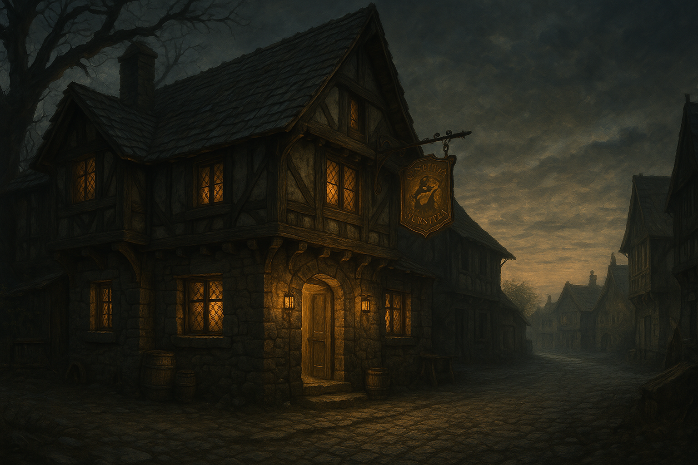
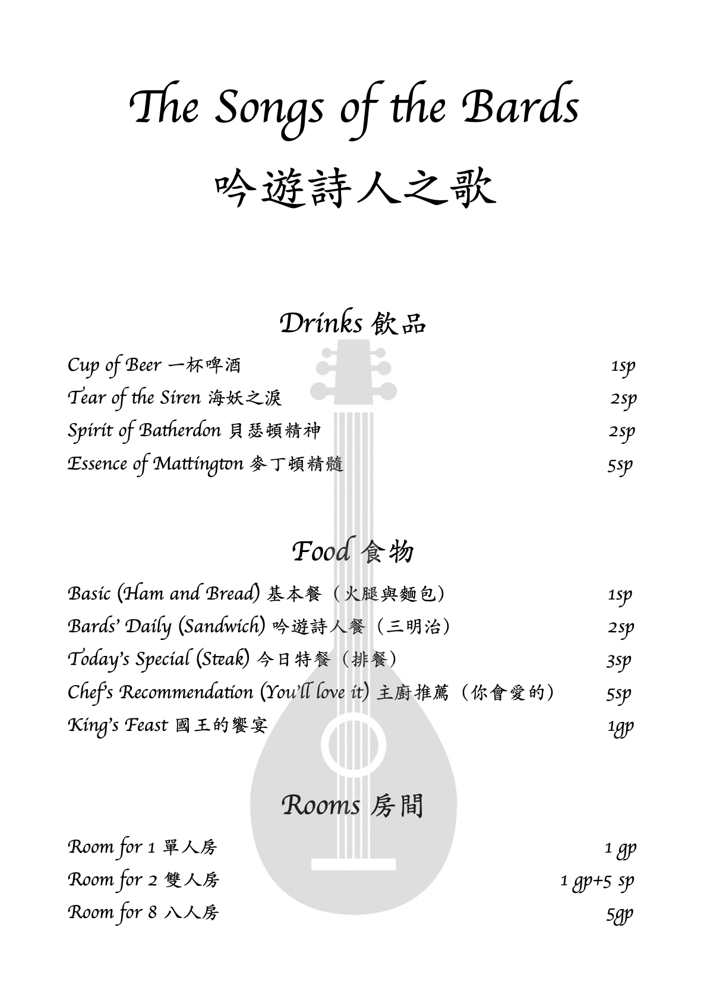
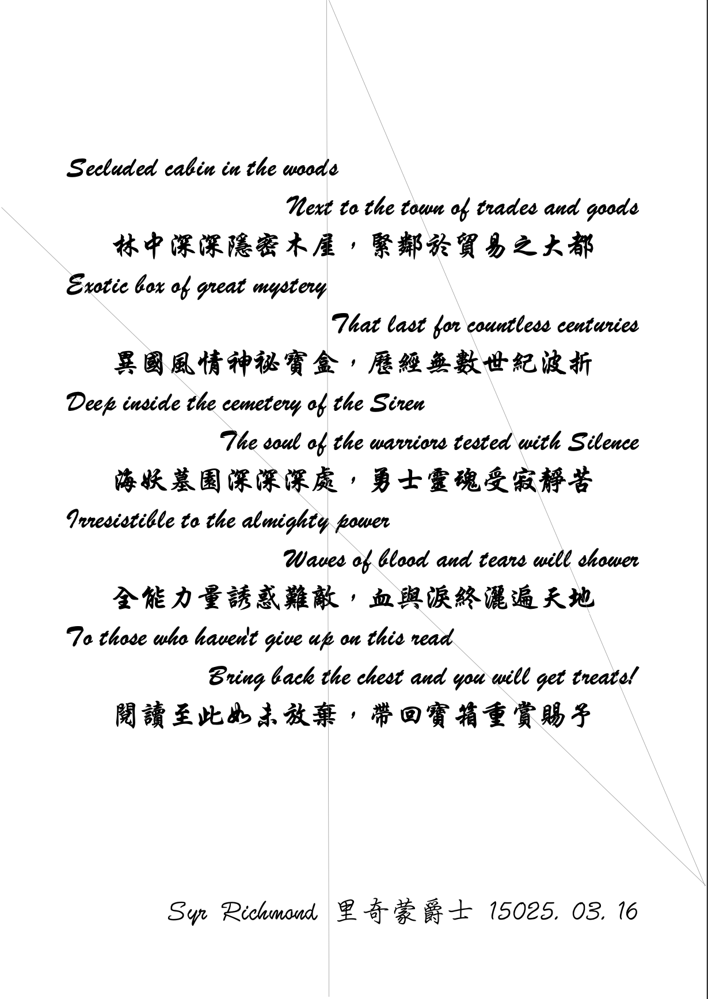
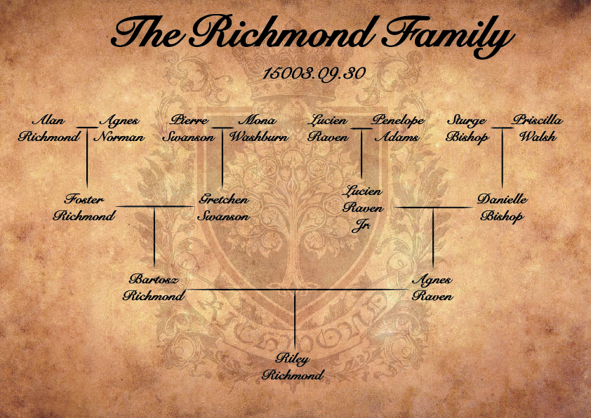

Chapter 1: The Town of Trades and Goods
The Elite Bloodline


The Elite Bloodline
15049.03.16
在麥丁頓王國內被稱為「貿易之都」的貝瑟頓，日暮低垂，當地最有名氣的酒館「吟遊詩人之歌」如往常的生意興隆。

用手杖滑動自己的推車，人魚鑰・佩洛西婭熟練地滑進酒館內，不需要其他人在身後推車。然而，他似乎感覺到進酒館後，自己的背包被人動了手腳。他停下推車，檢查了一下，發現了兩團原本不在自己身上的紙團，但上面寫的內容並不完整。酒館一樓還有一張空桌子，於是鑰趕緊滑到座位旁，隨意點了個餐點。
不久後，一名身材嬌小的斑貓人也在酒館門口經歷了與鑰相似的經歷，他也在背包內翻出了兩團紙團。看見只坐了鑰一人的圓桌，毛毛趕緊湊了過去。在幾番自然的撒嬌下，鑰豪爽地掏了自己的錢，為毛毛點了他的餐點。兩人也各自拿出自己翻到的紙團，嘗試拼起來，但得到的資訊非常不完整。
表情冷酷的妖精羅羅不知不覺走進了吟遊詩人之歌。他不清楚自己怎麼決定要來到這的，但他也知道自己其實不太有辦法依自己的意識下決定—一切都得經過「它」的意思。那隻手。那懸在空中，時而出現的傢伙。「那裡有空位呢，去坐吧。」那聲音指使著羅羅，他也只好加入鑰和毛毛的座位，但他們都能看得出新加入的妖精朋友似乎不太想理他們。在熱切問候之後，羅羅表示自己沒有被塞紙條，這讓鑰和毛毛更感困惑。問題還沒解決。
一個大塊頭的身影吸引了酒館內一些人的注意，一名穿著些許破爛制服的藍色皮膚龍人，何阿龍走進了酒館。他沒有多想，便看見尚有空位的圓桌，加入了鑰、毛毛，以及雖坐同桌，但看起來沒有和他們互動的羅羅。阿龍向三位自我介紹後，把錢包掏了出來，大辣辣的算著自己身上有多少錢，然後點了酒館最貴的餐點：國王的饗宴。雖然阿龍也沒有感覺到自己有被動了包包，在鑰和毛毛說到自己被塞了紙團後，他也翻了翻自己的背包。羅羅看見，也決定翻翻看有沒有紙團。兩人掏出紙團後，羅羅似乎對眼前的謎題有些興趣，將四人的紙團拼湊在一起—只剩下一點漏缺了。看來……還會有新的人出現？雖然不知道這是什麼意思，但從紙團上的字，這似乎是來自一位里奇蒙爵士（Syr Richmond）的委託。
餐點一道一道上，國王的饗宴和其他餐點比起來，似乎非常划算，有沙拉、湯品、麵包，還有吟遊詩人讓你點一首歌來表演。連正餐都還沒上呢。在阿龍出現以後，原本一臉嫌惡的服務生似乎態度變得唯唯諾諾，甚至後來還換了個態度和善許多的服務生。
在正餐上之前，毛毛已經喝了半杯羅羅點的「麥丁頓精髓」，醉意不小心就露出了馬腳。這時，大家聽見了門口傳出了物品掉落的聲響。一名披著斗篷的人正蹲在地上撿東西。毛毛想起剛剛感覺被塞東西時，似乎有個穿斗篷的嫌疑人士。躊躇著該怎麼辦時，阿龍早已起身向這人走去。
那人頭一抬，遮起的帽兜掉了下來，是名蜥蜴人，而他和阿龍一樣，有著亮麗的藍色尾巴。除了身上的斗篷外，雷亞的手上，也拿著一件斗篷，依他有限的語言表達能力，他似乎也注意到了一名想動他包包的人，但只抓到他的斗篷而已。雷亞將背包內的物品收好，在阿龍的引導下往圓桌走，但他並沒有意識到掉在地上的兩團紙。眼看兩團指沒有被拿走，羅羅趕緊從座位上衝了過來，把它們撿走。而它們正是最後的兩塊拼圖。

眾人看見了「委託書」上的寶箱與重賞，雖然還不知道是怎麼回事，但都起了野心，想嘗試一番。在討論與詢問之後，他們得知自己所在的貝瑟頓便是被稱為貿易之都的地方，附近似乎有座「幽深林」，很有可能就是委託書中提到的森林。而至於海妖墓園是什麼地方，或更根本的，海妖是什麼生物？他們也無從得知。最終，在夜色尚未太深時，五名初次見面的冒險新手們便踏出酒館，朝著他們在這座城市探索時，似乎有經過過的一處宅邸—里奇蒙爵士的宅邸前進。
走在大街上，殿後的雷亞和羅羅感覺到似乎有人正在跟蹤他們。情急之下，羅羅一回頭，便轟出了一發攻擊，那人便倒在地上，失去了意識。推著推車的阿龍和推車上的鑰與毛毛一回頭，發現地上竟然有個臉近乎毀容的死人。毛毛跳下了推車，在屍體周邊打量一番，發現了屍體的脖子後似乎有個刺青：R.I.L.E.Y.。而這名屍體手上握著的棍棒正下方有一圈文字，Rebels of Intellect Liberation and Empowered Youths（R.I.L.E.Y. 破謀青叛會）。在衛兵趕到前，五人趕緊將屍體搬到鑰的推車上，故作正常的趕往目的地。
來到里奇蒙爵士的宅邸門口，破舊的環境，看起來荒廢一段時間了，但從裡面傳出「艾格尼絲」還是「安格斯」的聲音，肯定是還有住人的。阿龍大力敲門，一名傭人打開了門。在一陣溝通後，傭人便讓冒險者們進到宅邸拜訪爵士。
在傭人去找爵士時，冒險者們在客廳打量環境。除了幾幅肖像畫外，客廳還懸掛著一張族譜。族譜上，有兩名艾格尼絲：艾格尼絲・諾曼以及艾格尼絲・瑞文。

不久後，傭人推著輪椅走回了客廳，輪椅上的里奇蒙爵士看起來兩眼無神，聽傭人的說法，爵士已經失智十年了，而他也是兩年前才從前一位傭人手上接下這份工作，幸好每個月的薪水優渥（似乎是爵士的女兒萊里固定寄來薪水），否則四層樓的宅邸，只有他一人照顧爵士，也是很辛苦。
毛毛得知爵士失智，且除了他之外只有傭人後，便藉著去「上廁所」的名義，偷溜到了二樓探索。在其中一間房間，毛毛翻到了一件斗篷，上面的藍色布料，像是緩慢流動一樣，色彩不斷變動，外圈還鑲有一長串金色的字，但是對毛毛而言，那是陌生的語言。他趕緊將這好東西塞在自己的腰間。
此時，傭人覺得毛毛廁所上太久，有點問題，便跑去廁所找他。羅羅和雷亞藉機也跑到樓上去了。羅羅在二樓探索，雖然一無所獲，但與毛毛見到面了；雷亞則跑到三樓，卻沒能開啟任何門。毛毛和羅羅趕到三樓時，正和雷亞說著話，但此刻他們聽見了樓梯下方傳來了腳步聲，羅羅趕緊在三樓樓梯間製造了雲霧。傭人和阿龍一同走入了雲霧之中，但很快便走了出來。傭人看見他們竟然跑到了三樓，表示他們如果想要在這邊借住一晚，也是沒問題，但只能待到隔天早上早餐吃完就得離開，然後他便帶著四人回到一樓。
四人和僕人又問了一些事，以及和依然無法溝通的里奇蒙爵士說了說話後，他們便決定準備要休息了。鑰因為上樓梯不方便，在一樓沙發睡；雷亞和羅羅在二樓的兩間客房休息；阿龍和毛毛則選擇三樓的兩間客房。
睡前，雷亞將此時放在他房間的屍體經過一點時間的手工，取出了她的脊椎，並將其他皮肉骨頭裝進袋子，準備丟掉。在羅羅的幫忙下，他們將裝滿屍體的袋子從二樓房間的窗後扔在街道旁。雷亞將被他視為「新武器」的脊椎用布料包起來，變準備睡了。
毛毛的好奇心沒有被滿足，因此躡手躡腳地走到了傭人口中「很久沒有在用」的四樓探索。地面上確實都是灰塵，看起來沒有人活動。四樓的四間房間都打不開，於是毛毛便回頭準備回去休息。然而，他似乎聽見了其中一間房間傳來人聲。仔細靠近一聽，是兩名年輕男子正在對話。雖然大多數內容聽不清楚，毛毛仍聽見了一個他從未聽過的名字：秘血菁英（T.I.D.E.S.）。這串很長的名字聽起來像個組織，但無從得知他是什麼組織。毛毛趕緊跑回三樓，打斷正在祈禱的阿龍，兩人一起回到四樓。
在阿龍的敲門聲得不到結果後，他回房間拿了巨斧，將這個解不開鎖的門敲開，卻發現裡面沒有人，但看著大扇的窗戶，人大概就是從這裡逃走的。毛毛發現兩名逃走的斗篷人，正從窗戶外地面準備跑走。其中一人回頭看了一眼，毛毛清楚記住了他有個跨過鼻樑，環繞整張臉的繃帶。經過毛毛的同意，在狂暴過後，阿龍揹著毛毛，一口氣從四樓窗戶跳了下去。沒有失去意識，但阿龍也受了重傷。毛毛輕巧地從趴在地上的阿龍身上跳了下來，看見兩名斗篷男已經消失在視線範圍的極限外了。雖然身高相差極大，毛毛還是努力撐著阿龍重傷的身體，繞回宅邸大門並敲門。
鑰想起傭人提到擔心晚上會有奇怪的人闖入宅邸，因此將大門深鎖，讓他對此時突然響起的敲門聲感到有點緊張。他用雙手拖著缺少後肢的人魚尾巴，努力往前爬動，終於走到門前。經過確認後，他才打開大門，讓狀況極差的阿龍和毛毛進了宅邸。
在阿龍的叫喚下，傭人也從樓上下來，並得知剛剛有人闖入宅邸的事。傭人趕緊將大門再次深鎖，便上樓休息了。為了表示關心，鑰簡單幫阿龍做了治療，接著毛毛和阿龍便回到樓上休息了。
睡前，毛毛拿出他藏在腰間的斗篷，鋪在床上。這斗篷的材質似乎挺好的，不久，毛毛便睡著了。
15049.03.17
一大清早，冒險者們依序醒來，稍做準備後，便來到了一樓。毛毛趁著還沒看見傭人，先到後方的廚房探索，卻發現除了麵包外，只有早已酸臭的牛奶。他偷拿了點麵包藏了起來，便跑回客廳。
傭人從樓上下來後，冒險者們聊著天，發現傭人竟然是從一樓大廳後通往庭院的後門將里奇蒙爵士推了出來。
毛毛試著將昨晚聽見的T.I.D.E.S.說給爵士聽，雖然爵士也只是一直重複著T.I.D.E.S.這個字眼，但很明顯的，他的雙眼有神，睜得很大。很顯然，他認得這個名字。
吃完早餐後，冒險者們決定先到城鎮上採買所需的用品，再出發前往幽深林。
15049.03.16
In Batherdon, known throughout the Kingdom of Mattington as the "Town of Trades and Goods," dusk was settling in, and the town's most famous tavern, Song of the Bards, was as busy as ever.
Using a cane to propel her cart, the merfolk, Kaname Peresia, smoothly slipped into the tavern without needing anyone to push her from behind. Yet shortly after entering, she had the distinct feeling that someone had tampered with her bag. She stopped his cart to check and found two crumpled pieces of paper that had not been there before, though the writing on them was incomplete. There was still an empty table on the tavern's first floor, so Kaname quickly rolled over and casually ordered a meal.
Not long after, a small tabaxi had a similar experience at the tavern entrance and also found two crumpled notes in his own bag. Seeing that the round table was occupied only by Kaname, Fur, quickly went over. After a bit of naturally charming pleading, Kaname generously pulled out her own money and ordered food for Fur as well. The two of them then took out their mysterious notes and tried fitting them together, but the information remained frustratingly incomplete.
The cold-faced elf Roel Lancelot drifted into Song of the Bards almost without realizing it. He was not entirely sure how he had ended up deciding to come here, but he knew well enough that he could not truly make decisions according to his own will. Everything had to pass through "its" intentions. That hand. That thing that floated in the air and appeared now and then. "There's an open seat there, go sit down." The voice directed Roel, and so he reluctantly joined Kaname and Fur at their table. The others could immediately tell that the newly arrived elf did not seem especially interested in interacting with them. After their warm greetings, Roel said he had not been slipped any note, which only left Kaname and Fur even more confused. The problem remained unsolved.
A large looming figure drew some attention inside the tavern as a blue skinned dragonborn in a somewhat tattered uniform entered. His name was Al-lon Riversend. Without overthinking it, he noticed the round table with open seats and joined Kaname, Fur, and Roel, who sat with them but did not seem socially engaged. After introducing himself to the three, Al-lon pulled out his purse, brazenly counted how much money he had, and ordered the tavern's most expensive meal: the King's Feast. Though Al-lon had not noticed anyone rummaging through his bag, after hearing Kaname and Fur talk about the notes they had found, he searched his own pack. Roel saw this and decided to check again as well. When the two of them also produced notes, Roel, suddenly intrigued by the mystery, pieced together the scraps from all four of them. Only one little gap remained. It seemed...... there was still someone else yet to appear? They had no idea what it all meant, but from the writing on the note, it appeared to be a commission from one Syr Richmond.
The dishes arrived one by one, and the King's Feast seemed incredibly good value compared to the other meals. It came with salad, soup, bread, and even a bard who would perform a song of your choice. The main course had not even arrived yet. After Al-lon's arrival, the server who had initially worn a disgusted expression suddenly became much more timid, and before long was even replaced by another server with a noticeably kinder attitude.
Before the main dish was served, Fur had already drunk half a glass of the "Essence of Mattington" that Roel had ordered, and his tipsiness began showing a bit too obviously. Just then, the group heard the sound of something falling near the entrance. A cloaked figure was crouched there, picking something up. Fur recalled that when he had felt someone slip something into his belongings earlier, the suspect had seemed to be someone in a cloak. While everyone hesitated over what to do, Al-lon had already gotten up and begun walking over.
When the person lifted her head, her hood fell back, revealing a lizardfolk. And like Al-lon, he had a strikingly bright blue tail. Besides the cloak he wore, Leah also had another cloak in her hand. Given her limited ability to explain herself, it seemed she too had noticed someone trying to get into her bag, but had managed to catch only the person's cloak. Leah put the contents of her bag back in order and, guided by Al-lon, headed toward the round table. She did not notice the two scraps of paper he had dropped on the ground. Seeing that they had been left behind, Roel immediately sprang up from his seat and picked them up. They were the final two missing pieces of the puzzle.
When the group saw the treasure chest and promised reward on the "commission letter," ambition stirred in all of them, even though none of them really understood what was going on. After some discussion and asking around, they learned that the town they were currently in, Batherdon, was indeed the place known as the Town of Trades and Goods, and that a nearby place called Deepwood might well be the forest mentioned in the commission. As for where the Siren's Cemetery might be, or more fundamentally what a siren even was, they had no clue. In the end, before night grew too late, the five novice adventurers who had only just met stepped out of the tavern and headed toward a manor they seemed to recall passing while exploring the city, Syr Richmond's estate.
As they walked along the main street, Leah and Roel, bringing up the rear, got the feeling someone was following them. In a split-second reaction, Roel turned around and fired off an attack, dropping the person unconscious to the ground. When Al-lon, pushing Kaname's cart with Kaname and Fur on it, turned around, they found what appeared to be a corpse on the ground with its face almost destroyed. Fur leapt down from the cart and examined the body, discovering what looked like a tattoo on the back of its neck: R.I.L.E.Y. Beneath the club clenched in the dead person's hand was an inscription: Rebels of Intellect Liberation and Empowered Youths, or R.I.L.E.Y. Before the guards arrived, the five of them hurriedly hauled the corpse onto Kaname's cart and proceeded toward their destination as though nothing were wrong.
At the entrance to Syr Richmond's estate, they found a run-down scene that looked as though it had been neglected for quite some time. Yet they could hear a voice from within saying something like "Agnes" or perhaps "Angus," which meant someone was definitely still living there. Al-lon pounded on the door, and a servant opened it. After some back-and-forth, the servant allowed the adventurers inside to visit the Syr.
While the servant went to fetch him, the adventurers looked around the drawing room. Besides several portraits, there was a family tree hanging on the wall. On it were two people named Agnes: Agnes Norman and Agnes Raven.
Before long, the servant wheeled Syr Richmond back into the drawing room. The Syr in the chair stared blankly into space. According to the servant, the man had been senile for ten years, and the servant himself had only taken over the job from the previous one two years ago. Fortunately, the monthly pay was generous, apparently sent regularly by the Syr's daughter Riley, because caring alone for both the Syr and a four-story manor would otherwise have been a hard life.
Once Fur learned that the Syr was senile and that only the servant lived here besides him, he used the excuse of needing the toilet to sneak off and explore the second floor. In one of the rooms, he found a cloak. The blue fabric on it seemed to flow slowly, its colors constantly shifting, and around the edge ran a long line of golden lettering in a language unfamiliar to him. He quickly tucked this treasure into his waistband.
By then, the servant had begun to suspect that Fur was taking suspiciously long in the bathroom and went to look for him. Roel and Leah took the opportunity to head upstairs as well. Roel searched the second floor and found nothing, though he did run into Fur. Leah went up to the third floor but failed to open any of the doors there. By the time Fur and Roel joined her on the third floor and were speaking with her, they heard footsteps coming up from below. Roel hastily created a cloud of mist on the third-floor stairway. The servant and Al-lon stepped into the mist, but emerged from it almost immediately. When the servant discovered that the others had gone all the way up to the third floor, she told them that if they wished to stay the night here, that was fine, but they would have to leave after breakfast the next morning. She then brought the four of them back downstairs.
After asking the servant a few more questions and speaking a bit more with the still-unresponsive Syr Richmond, the four decided to turn in for the night. Since climbing the stairs was inconvenient for Kaname, she slept on the sofa downstairs. Leah and Roel took two guest rooms on the second floor, while Al-lon and Fur chose two guest rooms on the third.
Before sleeping, Leah spent some time working on the corpse currently stored in her room, removing its spine and stuffing the remaining flesh and bones into a bag to be disposed of. With Roel's help, they tossed the bag containing the body out the second-floor window to the side of the street. Leah wrapped what she considered her "new weapon," the Spine, in cloth and then prepared to sleep.
Fur's curiosity remained unsatisfied, so he crept quietly up to the fourth floor, which the servant had described as a place that had not been used in a long time. The floor was indeed coated in dust, and no one seemed to move there. None of the four rooms on the fourth floor could be opened, so Fur turned to head back. Yet he thought he heard voices coming from one of the rooms. Pressing closer, he made out two young men speaking inside. Though most of what they said was inaudible, Fur clearly caught one unfamiliar name: The Incognito Descendants of the Elite Society, or T.I.D.E.S. It sounded like the name of an organization, though he had no way of knowing what kind. He dashed back to the third floor, interrupted Al-lon mid-prayer, and brought him back upstairs.
When knocking produced no response, Al-lon returned to his room, grabbed his great axe, and smashed open the locked door, only to find the room empty. Judging from the large open window, the people inside had likely fled that way. Fur spotted two cloaked figures outside on the ground, preparing to run. One of them glanced back, and Fur clearly memorized the bandages wrapped across the bridge of his nose and around his face. With Fur's approval and a burst of fury, Al-lon hoisted Fur onto his back and leapt straight out the fourth-floor window. He did not lose consciousness, but he was badly injured. Fur lightly sprang off the prone Al-lon and saw that the two cloaked men had already vanished at the far edge of sight. Despite the huge difference in size between them, Fur did his best to help support Al-lon's heavily wounded body as the two of them circled back to the manor's front door and knocked.
Kaname recalled the servant mentioning that he was worried strange people might break into the estate at night, so she had locked the front door securely. That made the sudden knocking quite unnerving. Dragging herself forward with her arms and the portion of her merfolk tail lacking hind fins, Kaname slowly made her way to the door. Only after confirming who it was did he unlock it and let the badly injured Al-lon and Fur back inside.
At Al-lon's call, the servant also came down from upstairs and learned that someone had broken into the manor. She immediately locked the front door tightly again, then went back upstairs to rest. To show concern, Kaname gave Al-lon some simple treatment, and after that Fur and Al-lon returned upstairs to sleep.
Before bed, Fur took out the cloak he had hidden at his waist and spread it across the bed. The material seemed quite fine, and before long Fur drifted off to sleep.
15049.03.17
Early the next morning, the adventurers woke one after another and, after getting ready, came down to the first floor. Before the servant appeared, Fur sneaked off to explore the kitchen in the back, only to find nothing but bread and long-soured milk. He stole a bit of bread and hid it away before scampering back to the drawing room.
After the servant came downstairs, the adventurers chatted for a while and then realized that the servant had wheeled Syr Richmond out from the rear door of the first-floor hall that led into the courtyard.
Fur tried saying the word T.I.D.E.S., which he had heard the night before, to the Syr. Though the old man only repeated the word T.I.D.E.S. again and again, his eyes were suddenly bright and wide open. Clearly, he recognized the name.
After breakfast, the adventurers decided to head into town first to buy the supplies they needed, and only afterward set out for Deepwood.